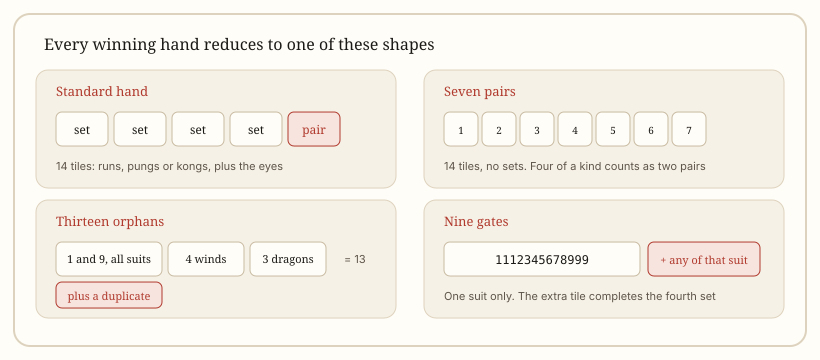

Getting started
Winning Hands in Mahjong: The Five Shapes
Every winning hand reduces to one of five shapes. Learn to recognise them and you can check any hand in a few seconds, in any style.
At a glance
- Standard shape
- 4 sets + 1 pair = 14 tiles
- Set types
- Run of three, triplet, or kong (counts as a set)
- Special shapes
- Seven pairs, thirteen orphans
- Nine gates
- One suit, 1112345678999 plus any tile of that suit
- Taiwanese
- 5 sets + 1 pair = 17 tiles
- Legal vs complete
- A complete shape can still fail the style's minimum
What counts as a winning hand?
A winning hand is four sets plus one pair. A set is either a run of three consecutive tiles in one suit, a triplet of three identical tiles, or a kong of four identical tiles. The pair is two identical tiles. That is 14 tiles in total.
Two shapes are exempt from this structure: seven pairs and thirteen orphans. Everything else, including the biggest hands in the game, still reduces to sets and a pair.

The standard shape, set by set
Four sets plus a pair sounds simple until you have to find the sets inside a messy hand. The practical method is to take out the pair first, then look for the most obvious set, and repeat until nothing is left.
- Run: 123, 456, 789 — same suit, consecutive numbers.
- Triplet: three identical tiles, such as three red dragons.
- Kong: four identical tiles. It counts as one set, which is why a kong needs a replacement tile: without one, the hand would be a tile short.
- Pair: exactly two identical tiles — the head of the hand.
A hand like 123 characters, 456 circles, 789 bamboo, three east winds and a pair of white dragons is complete. So is a hand of four triplets and a pair, which is the all-triplets pattern and scores well in most systems.
Seven pairs
Seven pairs is exactly that: seven different pairs, 14 tiles, no sets at all. It is legal in Chinese Official, riichi and most Chinese regional games, but it is not legal in American mahjong unless it appears on the card.
The trap is four of a kind. In Chinese Official, four identical tiles count as two pairs, not as a kong, and the hand cannot also claim triplet patterns. In riichi, the same four tiles also count as two pairs, but the hand cannot score triplet yaku. Beginners regularly double-count this.
Seven pairs also tends to be a defensive hand: you hold many unrelated tiles, so you discard less dangerously than a player chasing a flush.
Thirteen orphans
Thirteen orphans uses one of every terminal and honour tile: the 1 and 9 of each suit, plus east, south, west, north, red, green and white. That is 13 tiles. The fourteenth is a duplicate of any one of them, which completes the pair.
The hand cannot be played open. Any claim destroys it, because every tile must stay in hand. That makes it the purest "all or nothing" hand in the game and, in riichi, the hand most likely to end in a defensive standoff.
One rule catches people out: in riichi, if you discard any of the thirteen orphan tiles after reaching a thirteen-orphans wait, you become furiten and cannot win on a discard.
Nine gates
Nine gates is a single-suit hand: 1112345678999 of one suit, plus any one more tile of that same suit. The base shape already contains three sets and a pair, and the extra tile completes the fourth set.
It is worth listing separately because players often mistake it for just any flush. It is not: the exact 1112345678999 core must be present, and every tile must be in the same suit.
Seven shifted pairs
Seven shifted pairs is seven consecutive pairs in one suit, such as 11223344556677. It is a Chinese Official pattern rather than a universal shape, and unlike ordinary seven pairs it cannot be assembled from mixed suits.
Because it needs fourteen specific tiles from a single suit, it is vanishingly rare in practice. It is included here so that the shape list is complete, not because you should chase it.
Why some near-misses fail
A hand can look complete and still be illegal. Most rejections come down to three problems:
- Wrong count. Fourteen tiles that cannot be split into sets and a pair are simply not a win. A common example is four pungs plus two unmatched tiles — no pair anywhere.
- Missing the minimum. In Chinese Official a complete hand below 8 fan is a false win. In riichi, a complete hand with no yaku cannot be declared at all.
- Shape not on the card. In American mahjong, a structurally perfect hand is illegal unless the yearly card lists that exact pattern.
This is why experienced players count twice: once for shape, once for value. The scoring page covers the second count.
Checking a hand in four steps
- Count tiles. 14 for a standard hand, 17 in Taiwanese, 13 while waiting.
- Find the pair. Remove it first; without a pair nothing else works.
- Remove sets. Take out the most constrained set first — usually a triplet or an edge run.
- Confirm the value. Check the minimum before declaring, not after.
Doing this in order takes a few seconds and prevents the most embarrassing mistake at a table: calling a win that the scorer then rejects.
How the shape changes by style
| Style | Hand | Shape rule |
|---|---|---|
| MCR | 13 tiles | 4 sets + 1 pair, plus 8 fan minimum |
| Riichi | 13 tiles | 4 sets + 1 pair, plus at least one yaku |
| Hong Kong | 13 tiles | 4 sets + 1 pair, plus table minimum |
| Sichuan | 13 tiles | 4 sets + 1 pair, must have dropped one suit |
| Taiwanese | 16 tiles | 5 sets + 1 pair |
| American | 13 tiles | Pattern printed on the yearly card |
The one genuine structural difference is Taiwanese: an extra set, not an extra pair. Everything else changes what the hand is worth, not how it is built.
Quick answers
Can four identical tiles count as two pairs in seven pairs?
In Chinese Official and riichi, yes. Four of a kind counts as two pairs, and the hand cannot claim triplet patterns on those tiles.
Is a kong a set?
Yes, a kong counts as one of your four sets. The fourth tile is replaced from the wall so your hand stays the right size.
Why did my 14-tile hand get rejected?
Either the tiles could not be split into four sets and a pair, or the hand did not meet the style's minimum. Check the count first, then the value.
Does thirteen orphans work in every style?
No. It is standard in Chinese Official and riichi, common in regional Chinese games, and absent from American mahjong unless listed on the card.